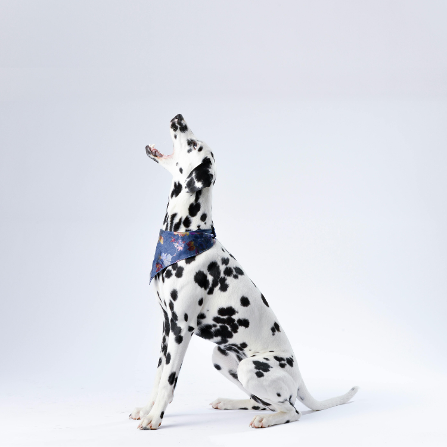

大麥町犬，也稱為達爾馬提亞犬，是一種獨特而引人注目的犬種，以其白色毛皮上的黑色或肝色斑點而聞名。無論是大麥町犬還是達爾馬提亞犬，它們指的都是同一種狗。最早在克羅地亞的達爾馬提亞地區培育出來，它們有著作為馬車狗、消防站吉祥物和伴侶狗的悠久歷史。本文將深入探討這種犬種的獨特特徵和照顧需求，非常適合對大麥町犬、達爾馬提亞幼犬感興趣或在觀看過著名的《101忠狗》電影後想要了解更多的人。
大麥町犬的歷史可以追溯到古代，埃及墓葬壁畫中就有斑點狗的記錄。這種犬種在18世紀的達爾馬提亞地區特別受歡迎，用於保護馬和馬車。其獨特的外貌和可靠的性格也使其成為美國消防站的吉祥物，它們會在消防車前面奔跑以清理道路。
大麥町犬是中型犬，以其引人注目的毛皮圖案而聞名。它們體型結實，公犬肩高約22-24英寸，體重在60-70磅之間，母犬稍小一些。它們的毛短而密，白色背景上有明顯的黑色或肝色斑點。它們有著明顯的運動型和優雅的步態。
大麥町犬以其充滿活力、好動和聰明的性格而聞名。它們是高度活躍的狗，喜歡體力活動和智力刺激。大麥町犬對家庭非常親切和忠誠，但對陌生人可能會保持距離。由於它們的警惕性和保護性，它們是出色的看門狗。一致的訓練和早期的社交化對於正向引導其精力和防止行為問題至關重要。
照顧大麥町犬需要考慮以下幾點：
大麥町犬經常與其他活躍的犬種如邊境牧羊犬和澳大利亞牧羊犬進行比較。儘管這些犬種都需要大量的運動和智力刺激，大麥町犬作為馬車狗和消防站吉祥物有其獨特的歷史。它們的獨特外貌使其與其他犬種區分開來。
大麥町犬是一種美麗而充滿活力的犬種，非常適合活躍且投入的飼主。如果你能滿足它們的運動、美容和訓練需求，大麥町犬會以忠誠和愛回報你。它們獨特的外貌和活潑的性格使其成為任何家庭中的獨特和珍貴的成員，無論你是尋找大麥町犬還是大麥町幼犬。
在選購寵物用品時，以下是五間值得推薦的優質寵物店：
汪喵星球致力於提供貼近犬貓需求的產品。公司深信健康的寵物食品不應該是奢侈品，應該是每隻毛小孩能夠長期享用的基本需求。他們專注於打造高品質、營養豐富又平易近人的濕食，所有產品均由專業獸醫師和營養配方師精心調配把關。汪喵星球的願景是讓毛孩吃得更好，與主人一同慢慢變老。
小毛球是一家專賣汪星人與喵星人罐罐與零食的商店，該商店在蝦皮販售的潔牙棒，甚至達到50萬件以上的銷售。另外，商店中也販售一些寵物小玩具以及衣服。
米拓寵物旗艦店最熱銷的款式是貓狗零食的凍乾，銷售量達到驚人的535.7萬件，並且有著4.9顆星的好評。第二款熱銷款式日本品牌的豆腐砂，價格是非常實惠的銅板價，銷售量也達到21.6萬件，5星好評，尤其推薦給喵星人的主人。
寵星球是一家主要販售寵物生活必需品的商店，像是防滑墊、尿布墊、寵物涼墊、毛梳、貓砂、拾便袋等等，同時也販售有寵物零食。平實的價格是一大特點，商店內經常是銅板價格的商品，其熱銷款尿布墊有著23萬以上的銷售量。
歐豆K跟寵星球的性質有點相似，都是販售平價寵物生活必需品的商店，但毆豆K多了小動物像是倉鼠與兔子用品的販售。
這些店鋪不僅提供優質的產品，還能為您的寵物提供最佳的照顧和服務。希望這些推薦能幫助您更好地照顧您的毛小孩。